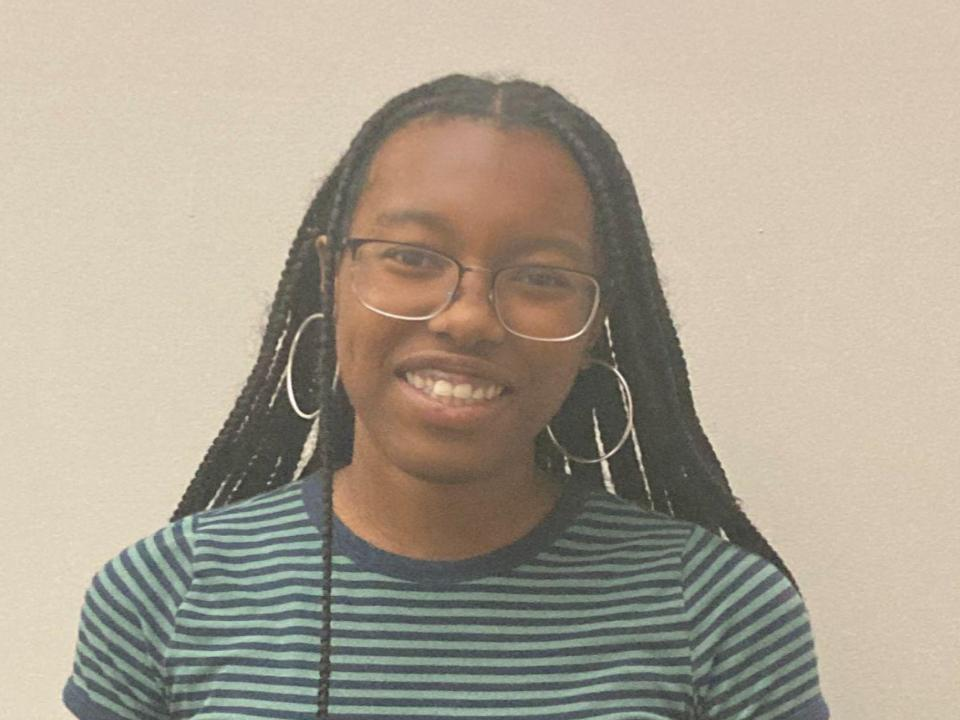
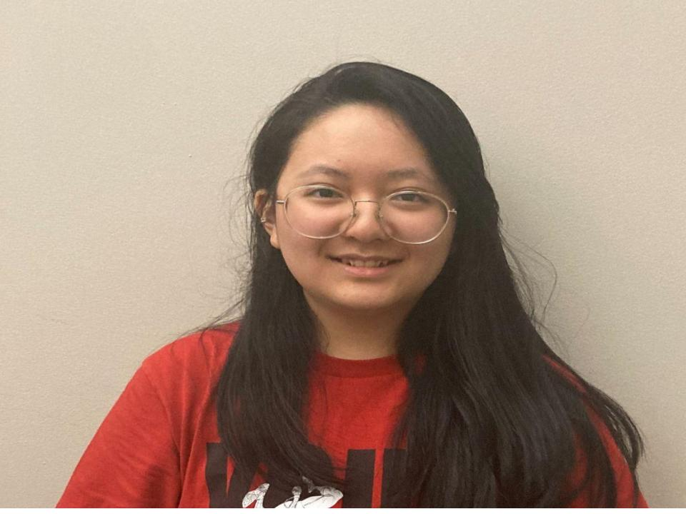

AI Scholars: Spoiled Food Classifier
This model was created by five highschool seniors who spent their summer at Carnegie Mellon as AI Scholars. These five individuals all come from different backgrounds, but succesfully came together for the cause of ending food waste through Artificial Intelligence

Kamilah Clark is a current senior at Townview TAG in Dallas,Texas. Kamilah joined the AI Scholars program because she is “ interested in pursuing AI as a career and attending Carnegie Mellon University”

"Food waste, that scourge that sends more than a third of our food supply to rot and is a major contributor to climate change, seems like it should be easy to address."
Sophia Ait Boucherbil is currently a senior at Illinois Mathematics and science academy. Sophia joined the AI Scholars Program because she" was very interested in an opportunity solely dedicated to learning about artificial intelligence"

Nafisa Martey is currently a senior at Germantown Friends School in Philadelphia,Pennsylvania. Nafisa joined the AI Scholars Program because she" wanted the opportunity to learn about Artificial Intelligence while having the opportunity to experience college firsthand.

Dina Long is a student at Carnegie Mellon University from Vancouver, Canada. Dina says “ I joined the program as a TA because I think it's difficult for students to decide whether they want to pursue a career in AI without prior experience, so I wanted to help high school students to learn about AI before they enter college.
Dominic Lee is currently a senior at Mills highschool in California. Dominic joined the AI Scholars program because he “really likes the general area of computer science and I am also very interested in Carnegie Mellon.”